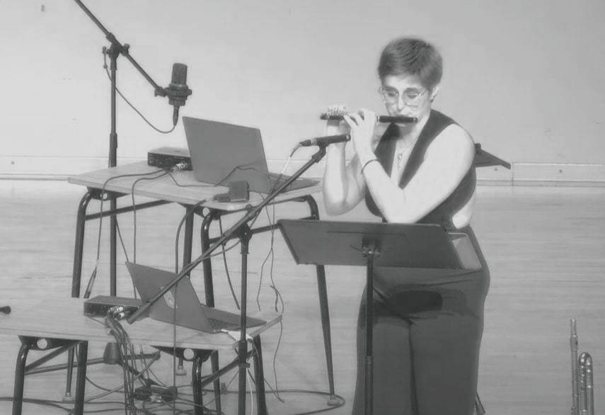

CHIRP depicts a sunrise in three short scenes. It explores two birdsong quotations from Olivier Messiaen’s Orchestral work Réveil des oiseaux (1953), the Nightjar, representing the night, and the Woodlark, representing the day. Through various means I try to create a liminal space between Messiaen’s interpretation of birdsong and my own.
04.06.24 . 7:30pm CST . Electroacoustic Fais Do Do, SEAMUS National Conference . Louisiana State University, Digital Media Center Theater . Baton Rouge, LA . US
Lea Beaumert-Patterson, Piccolo
06.30.23 . 7:30pm EDT . SPLICE Institute 2023 Participant Concert 1 . Dalton Recital Hall, Western Michigan University . 1300 Theatre Drive . Kalamazoo, MI . US
Robin Meiksins, Piccolo
2024 SEAMUS Annual Conference - SOCAN Foundation, Travel Assistance Grant
2023 SPLICE Insitute - SOCAN Foundation, Travel Assistance Grant